图由顶点和边组成。有向边表示单向关系，无向边表示双向关系，带权边表示代价。先弄清题目属于哪一种，再选算法。
#7.1 图的定义和基本术语
图比线性结构和树更一般：结点之间的关系可以是任意的。按第 1 章的分类——线性结构唯一前驱、唯一后继；树唯一前驱、多个后继；图对前驱和后继的个数都不加限制。线性和树都可以看成受限的图。
一个典型问题：要在几个城市之间建通信网，使每两个城市都能直接或间接通话，并且总造价尽量低。用顶点代表城市，边代表线路，边旁的数代表造价，问题就变成：在带权图里找一棵连通全部顶点、边权之和最小的树。这就是后面的最小生成树。
图记作 G=⟨V,E⟩。V 是顶点的有穷非空集合；E 是边的集合，每条边是一对顶点。边没有方向时叫无向图，无序对写成 (v1,v2)，(v1,v2) 与 (v2,v1) 是同一条边。边有方向时叫有向图，有序对写成 ⟨v1,v2⟩，也叫弧：v1 是弧尾（起点），v2 是弧头（终点）；⟨v1,v2⟩ 与 ⟨v2,v1⟩ 是两条不同的弧。
边或弧上可以附带权，表示距离、时间或代价。每条边都带权的图叫带权图。本书不考虑多重边（同一对顶点之间多于一条边）和自环（顶点到自己的边）。
用 n 表示顶点数，e 表示边数。无向图 e 的范围是 0∼n(n−1)/2，有向图是 0∼n(n−1)。边相对少的叫稀疏图，相对多的叫稠密图。任意两个顶点之间都有边的图叫完全图，它取到边数的上限。
若 V' 是 V 的子集，E' 是 E 的子集，且 E' 里的边只连 V' 里的顶点，则 G'=⟨V',E'⟩ 是 G 的子图。一条边所连的两个顶点互为邻接点；这条边与这两个顶点相关联。有向图里还要分清「邻接到」和「邻接自」。
顶点的度是与它相关联的边数。有向图再分成入度（指进来的弧）和出度（指出去的弧）。度为 0 的顶点是孤立点。
从 u 出发、沿边走到 v 的顶点序列叫路径；边数是路径长度。有向图必须顺着弧走。起点和终点相同、且至少含一条边的路径叫回路（环）。除端点外没有重复顶点的路径叫简单路径。
无向图中，若任意两点之间都有路径，称图连通；极大的连通子图叫连通分量。有向图中，若任意两点 u、v 都存在 u 到 v 和 v 到 u 的有向路径，称强连通；只要求把有向边看成无向边后连通，叫弱连通。
无向连通图的生成树，是包含全部顶点、有 n−1 条边、因而没有环的连通子图。带权连通图里边权之和最小的生成树，就是最小生成树。最短路的「短」是边权总和最小，不一定是经过的边数最少。
选算法之前，先分清题目：
| 题目 | 前提 | 结果 |
|---|---|---|
| 从一个点能走到哪些点 | 任意图 | DFS 或 BFS 的访问序列 |
| 课程或任务的可行顺序 | 有向无环图 | 拓扑序；有环则无解 |
| 一个源点到各点的最短路 | 边权非负 | Dijkstra 的距离数组 |
| 任意两点最短路 | 顶点数较小 | Floyd 的距离矩阵 |
| 连通所有点且总权最小 | 无向连通图 | Prim 或 Kruskal 的边集 |
本单元用邻接矩阵。没有边记为 infinity（int 最大值的四分之一，给加法留余量）。环、非连通等正常失败用 optional 表达。DFS 仍是递归，深图有栈溢出风险。
#7.2 图的抽象数据类型
图的对外运算是：指定顶点数构造、加一条边、问有多少个顶点，以及后面各节的周游、拓扑、最短路和最小生成树。原书【代码7.1】【代码7.2】的 ADT 声明残缺，标识符还被 OCR 空格切断。本书直接定义在 Graph 上。
#7.3 图的存储结构
图常用两种存法。邻接矩阵用 n×n 的表，A[i][j] 表示 i 到 j 有没有边、权是多少，适合稠密图和需要 O(1) 问「两点之间有没有边」的算法（Floyd、Prim）。邻接表为每个顶点挂一条出边表，适合稀疏图和只沿出边走的算法（DFS、BFS、Dijkstra、拓扑）。
两种都有可运行实现：邻接矩阵是 code/ch07/graph（代码7.1–7.3），邻接表是 code/ch07/adjacency_list（代码7.4）。两者逐项对拍——同一张图上 DFS/BFS 序列、拓扑序、Dijkstra 距离向量必须完全相同，外加 30 轮随机图对拍。换存储方式不该换答案，只该换代价。
#7.3.1 相邻矩阵
邻接矩阵的第 from 行、第 to 列是边权。构造时对角线为 0（到自己的距离是 0），其余为 infinity。add_edge(..., directed=false) 同时写入对称位置，用来表示无向边。零权边可以表示——原书把 0 同时当成「无边」，那样权为 0 的边就存不进去。
#7.3.2 邻接表
邻接表为每个顶点存一张出边表，只存实际存在的边。代价随之全变：
| 邻接矩阵 | 邻接表 | |
|---|---|---|
| 存储量 | V2 | V+E |
| 遍历某点的邻居 | O(V)，要扫过整行 | O(deg v) |
| 问「(u,v) 之间有没有边」 | O(1) | O(deg u) |
| DFS / BFS 全图 | O(V2) | O(V+E) |
| Dijkstra | O(V2) | O((V+E) log V)（配二叉堆） |
注意第三行：邻接表在这一项上是吃亏的。没有哪种表示法总是更好，这正是本节要比较的东西。
结构上的差别只有一处——存的是什么：
/// 邻接表存图（原书【代码7.4】）：每个顶点挂一条边表，只存**实际存在**的边。
///
/// 与同章 `Graph`（邻接矩阵）的区别只有一处——存储方式——但这一处决定了全部代价：
///
/// | | 邻接矩阵 | 邻接表 |
/// | --- | --- | --- |
/// | 存储量 | $V^2$ | $V + E$ |
/// | 遍历某点的邻居 | $O(V)$，要扫过整行 | $O(\deg v)$，只走这条边表 |
/// | 判断 (u,v) 是否有边 | $O(1)$ | $O(\deg u)$ |
/// | DFS / BFS 全图 | $O(V^2)$ | $O(V + E)$ |
///
/// 稀疏图（$E \ll V^2$）上邻接表快得多；稠密图或频繁问「这两点之间有没有边」时，
/// 矩阵反而合适。**没有哪种表示法总是更好**，这正是本章要比较的东西。
class GraphList {
public:
static constexpr int infinity = std::numeric_limits<int>::max() / 4;
struct Edge {
std::size_t from;
std::size_t to;
int weight;
bool operator<(const Edge& other) const noexcept { return weight < other.weight; }
};
explicit GraphList(std::size_t count) : adjacency_(count) {}
/// 加边。重复加同一条 `from→to` 时**覆盖权值**而不是并存两条——
/// 与邻接矩阵的语义保持一致，两种表示法才可以逐项对拍。代价是每次加边 O(deg from)。
void add_edge(std::size_t from, std::size_t to, int weight, bool directed = true) {
check_vertex(from);
check_vertex(to);
if (weight < 0) {
throw std::invalid_argument("negative edge");
}
put(from, to, weight);
if (!directed) {
put(to, from, weight);
}
}
[[nodiscard]] std::size_t vertices() const noexcept { return adjacency_.size(); }
/// 边表里的条目数。无向图一条边会在两端各存一次，这里如实返回条目数。
[[nodiscard]] std::size_t edge_entries() const noexcept {
std::size_t total = 0;
for (const auto& list : adjacency_) {
total += list.size();
}
return total;
}
[[nodiscard]] std::size_t degree(std::size_t vertex) const {
check_vertex(vertex);
return adjacency_[vertex].size();
}
/// 某个顶点的边表。邻接表的核心能力：拿到邻居不必扫过不存在的边。
[[nodiscard]] const std::vector<Edge>& neighbors(std::size_t vertex) const {
check_vertex(vertex);
return adjacency_[vertex];
}
[[nodiscard]] std::optional<int> weight(std::size_t from, std::size_t to) const {
check_vertex(from);
check_vertex(to);
for (const Edge& edge : adjacency_[from]) {
++scanned_;
if (edge.to == to) {
return edge.weight;
}
}
return std::nullopt; // 没有这条边是预期状态，不是错误
}
/// 存储量（按「一个整数算一格」计）。对照矩阵的 $V^2$，稀疏图上差距一目了然。
[[nodiscard]] std::size_t storage_cells() const noexcept {
return vertices() + edge_entries() * 2; // 每条边存 to 和 weight
}
/// 已经检查过多少条边。教学计数器：用它把 $O(V+E)$ 和 $O(V^2)$ 的差别量出来。
[[nodiscard]] std::size_t scan_steps() const noexcept { return scanned_; }
void reset_scan_steps() const noexcept { scanned_ = 0; }周游时的差别随之而来。矩阵版每出队一个顶点要扫过整行 V 格，邻接表只走这条边表：
/// 深度优先周游。只走边表，不看不存在的边——这是与矩阵版最直接的差别。
[[nodiscard]] std::vector<std::size_t> dfs(std::size_t source) const {
check_vertex(source);
std::vector<bool> seen(vertices());
std::vector<std::size_t> result;
visit_depth_first(source, seen, result);
return result;
}
[[nodiscard]] std::vector<std::size_t> bfs(std::size_t source) const {
check_vertex(source);
std::vector<bool> seen(vertices());
std::queue<std::size_t> pending;
std::vector<std::size_t> result;
pending.push(source);
seen[source] = true;
while (!pending.empty()) {
const std::size_t from = pending.front();
pending.pop();
result.push_back(from);
for (const Edge& edge : adjacency_[from]) { // 矩阵版这里要扫 V 格
++scanned_;
if (!seen[edge.to]) {
seen[edge.to] = true;
pending.push(edge.to);
}
}
}
return result;
}差距是量出来的，不是推出来的。取一条 1000 个顶点的链（E=V−1，典型的稀疏图）：
#include "modern.hpp"
#include <cstdio>
int main() {
using dsa::GraphList;
// 一条 1000 个顶点的链：典型的稀疏图（E = V - 1）。
constexpr std::size_t n = 1000;
GraphList sparse(n);
for (std::size_t v = 0; v + 1 < n; ++v) {
sparse.add_edge(v, v + 1, 1);
}
sparse.reset_scan_steps();
const auto order = sparse.bfs(0);
const std::size_t steps = sparse.scan_steps();
std::printf("稀疏图 V=%zu, E=%zu\n", n, sparse.edge_entries());
std::printf(" 邻接表存储 %zu 格 ← 随 V+E 走\n", sparse.storage_cells());
std::printf(" 邻接矩阵存储 %zu 格 ← V*V\n", n * n);
std::printf(" BFS 走遍 %zu 个顶点，只检查了 %zu 条边\n", order.size(), steps);
std::printf(" 邻接矩阵的 BFS 要扫 %zu 格（每出队一个顶点扫一整行）\n", n * n);
// 教科书例子：最短路与最小生成树。
GraphList graph(6);
const int edges[][3] = {{0,1,7},{0,2,9},{0,5,14},{1,2,10},{1,3,15},
{2,3,11},{2,5,2},{3,4,6},{5,4,9}};
for (const auto& e : edges) {
graph.add_edge(static_cast<std::size_t>(e[0]), static_cast<std::size_t>(e[1]), e[2], false);
}
const auto distance = graph.dijkstra(0);
std::printf("\n从 0 出发的最短距离:");
for (const int d : distance) {
std::printf(" %d", d);
}
const auto mst = graph.prim(0);
int total = 0;
for (const auto& edge : *mst) {
total += edge.weight;
}
std::printf("\n最小生成树 %zu 条边，总权 %d\n", mst->size(), total);
return 0;
}稀疏图 V=1000, E=999
邻接表存储 2998 格 ← 随 V+E 走
邻接矩阵存储 1000000 格 ← V*V
BFS 走遍 1000 个顶点，只检查了 999 条边
邻接矩阵的 BFS 要扫 1000000 格（每出队一个顶点扫一整行）
从 0 出发的最短距离: 0 7 9 20 20 11
最小生成树 5 条边，总权 33存储差 300 倍，BFS 的检查次数差 1000 倍。稠密图上这个差距会消失——E 接近 V2 时， V+E 也就是 V2，而矩阵还省掉了存 to 的那一半空间。
Dijkstra 是这一章里差别最大的一处。矩阵版每轮要扫一遍全部顶点找最近的那个，是 O(V2)； 邻接表配一个最小堆之后，「找最近顶点」由堆负责，「松弛」只走实际存在的边：
/// Dijkstra，最小堆版。代价 $O((V+E)\log V)$。
///
/// 矩阵版每轮要扫一遍全部顶点找最近的那个，是 $O(V^2)$；换成邻接表 + 堆之后，
/// 「找最近顶点」由堆负责、「松弛」只走实际存在的边。**稀疏图上这才是该用的组合**。
/// 堆是第 5 章的教学内容，这里作为基础设施使用（见 unit.json 的 d001_exceptions）。
[[nodiscard]] std::vector<int> dijkstra(std::size_t source) const {
check_vertex(source);
std::vector<int> distance(vertices(), infinity);
distance[source] = 0;
using Item = std::pair<int, std::size_t>; // (当前距离, 顶点)
std::priority_queue<Item, std::vector<Item>, std::greater<Item>> heap;
heap.emplace(0, source);
while (!heap.empty()) {
const auto [dist, from] = heap.top();
heap.pop();
if (dist > distance[from]) {
continue; // 堆里的旧条目，已经被更短的路径取代
}
for (const Edge& edge : adjacency_[from]) {
++scanned_;
const int relaxed = dist + edge.weight;
if (relaxed < distance[edge.to]) {
distance[edge.to] = relaxed;
heap.emplace(relaxed, edge.to);
}
}
}
return distance;
}7.5.1 节给出的 O(V2) 是矩阵版的结论，别把它套到邻接表上；反过来，常见教材里那个 O((V+E) log V) 也不能套到矩阵版上。复杂度是「算法 + 存储结构」一起决定的。
#7.3.3 十字链表
邻接表只沿出边组织数据；如果还要频繁查询“哪些边指向这个顶点”，就得另存一份逆邻接表。十字链表把两种方向接在同一个弧结点上：tailnextarc 串起同一尾点的出边，headnextarc 串起同一头点的入边；顶点同时保存 firstoutarc 和 firstinarc。每条弧只分配一个结点，却能在 O(deg+(v)) 或 O(deg−(v)) 时间遍历出边或入边，空间为 O(V+E)。
它适合需要同时维护入度和出度的有向图，例如拓扑排序、依赖图和删除一条弧后的双向更新。代价是插入、删除必须同时维护两条链，指针不变量比普通邻接表多；只沿出边遍历的程序使用邻接表更简单。实现时删除弧要从尾点的出链和头点的入链各摘除一次，不能只改其中一条，否则下一次按另一方向遍历会访问已释放结点。
#7.4 图的周游
#先跑一遍
下面这张有向图：0→1(2)、0→2(7)、1→2(1)、1→3(5)、2→3(1)、3→4(3)。从 0 到 4 的最短路是 0→1→2→3→4，总权 7，不是那条权为 7 的直达边 0→2 再往后走。
#include "modern.hpp"
#include <iostream>
int main() {
dsa::Graph graph(5);
graph.add_edge(0, 1, 2);
graph.add_edge(0, 2, 7);
graph.add_edge(1, 2, 1);
graph.add_edge(1, 3, 5);
graph.add_edge(2, 3, 1);
graph.add_edge(3, 4, 3);
std::cout << "DFS(0):";
for (std::size_t vertex : graph.dfs(0)) {
std::cout << ' ' << vertex;
}
std::cout << "\nBFS(0):";
for (std::size_t vertex : graph.bfs(0)) {
std::cout << ' ' << vertex;
}
const auto topo = graph.topological_sort();
std::cout << "\n拓扑序:";
if (topo) {
for (std::size_t vertex : *topo) {
std::cout << ' ' << vertex;
}
} else {
std::cout << " 无（有环）";
}
const auto distance = graph.dijkstra(0);
std::cout << "\nDijkstra(0->4) = " << distance[4] << '\n';
}c++ -std=c++17 -Wall -Wextra -Werror -Icode/ch07/graph \
code/ch07/graph/demo.cpp -o /tmp/graph-demo
/tmp/graph-demoDFS(0): 0 1 2 3 4
BFS(0): 0 1 2 3 4
拓扑序: 0 1 2 3 4
Dijkstra(0->4) = 7若再加上 4→0 形成环，topological_sort() 返回 nullopt。
#7.4.1 深度优先周游
DFS 进入一个顶点就立刻标记已访问，再沿编号从小到大的出边递归。BFS 用队列按层扩展，先到的顶点先出队。
[[nodiscard]] std::vector<std::size_t> dfs(std::size_t source) const {
check_vertex(source);
std::vector<bool> seen(vertices());
std::vector<std::size_t> result;
visit_depth_first(source, seen, result);
return result;
}def dfs(self, source: int) -> list[int]:
self._check_vertex(source)
seen = [False] * self.vertices
result: list[int] = []
def visit(vertex: int) -> None:
seen[vertex] = True
result.append(vertex)
for target in range(self.vertices):
if self._adjacency[vertex][target] < self.infinity and not seen[target]:
visit(target)
visit(source)
return result#7.4.2 广度优先周游
[[nodiscard]] std::vector<std::size_t> bfs(std::size_t source) const {
check_vertex(source);
std::vector<bool> seen(vertices());
std::queue<std::size_t> queue;
std::vector<std::size_t> result;
queue.push(source);
seen[source] = true;
while (!queue.empty()) {
const std::size_t from = queue.front();
queue.pop();
result.push_back(from);
for (std::size_t to = 0; to < vertices(); ++to) {
if (adjacency_[from][to] < infinity && !seen[to]) {
seen[to] = true;
queue.push(to);
}
}
}
return result;
}def bfs(self, source: int) -> list[int]:
self._check_vertex(source)
seen = [False] * self.vertices
queue = [source]
head = 0
seen[source] = True
result: list[int] = []
while head < len(queue):
vertex = queue[head]
head += 1
result.append(vertex)
for target in range(self.vertices):
if self._adjacency[vertex][target] < self.infinity and not seen[target]:
seen[target] = True
queue.append(target)
return result#7.4.3 拓扑排序
统计每个顶点的入度，把入度为 0 的点入队；每取出一个点，就把它指出的入度减 1。若最终取出的点数少于顶点数，图里有环。
[[nodiscard]] std::optional<std::vector<std::size_t>> topological_sort() const {
std::vector<std::size_t> indegree(vertices());
for (std::size_t from = 0; from < vertices(); ++from) {
for (std::size_t to = 0; to < vertices(); ++to) {
if (from != to && adjacency_[from][to] < infinity) {
++indegree[to];
}
}
}
std::queue<std::size_t> queue;
for (std::size_t vertex = 0; vertex < vertices(); ++vertex) {
if (indegree[vertex] == 0) {
queue.push(vertex);
}
}
std::vector<std::size_t> result;
while (!queue.empty()) {
const std::size_t from = queue.front();
queue.pop();
result.push_back(from);
for (std::size_t to = 0; to < vertices(); ++to) {
if (from != to && adjacency_[from][to] < infinity && --indegree[to] == 0) {
queue.push(to);
}
}
}
return result.size() == vertices() ? std::optional<std::vector<std::size_t>>(result)
: std::nullopt;
}def topological_sort(self) -> list[int] | None:
indegree = [0] * self.vertices
for source in range(self.vertices):
for target in range(self.vertices):
if source != target and self._adjacency[source][target] < self.infinity:
indegree[target] += 1
queue = [vertex for vertex in range(self.vertices) if indegree[vertex] == 0]
head = 0
result: list[int] = []
while head < len(queue):
source = queue[head]
head += 1
result.append(source)
for target in range(self.vertices):
if source != target and self._adjacency[source][target] < self.infinity:
indegree[target] -= 1
if indegree[target] == 0:
queue.append(target)
return result if len(result) == self.vertices else None#7.5 最短路径
#7.5.1 单源最短路径
Dijkstra 反复选出尚未确定的、当前距离最小的顶点，用它的出边松弛邻居。边权必须非负。
[[nodiscard]] std::vector<int> dijkstra(std::size_t source) const {
check_vertex(source);
std::vector<int> distance(vertices(), infinity);
std::vector<bool> used(vertices());
distance[source] = 0;
for (std::size_t count = 0; count < vertices(); ++count) {
const std::size_t from = nearest_unvisited(distance, used);
if (from == vertices() || distance[from] == infinity) {
break;
}
used[from] = true;
for (std::size_t to = 0; to < vertices(); ++to) {
if (adjacency_[from][to] < infinity &&
distance[to] > distance[from] + adjacency_[from][to]) {
distance[to] = distance[from] + adjacency_[from][to];
}
}
}
return distance;
}def dijkstra(self, source: int) -> list[int]:
self._check_vertex(source)
distance = [self.infinity] * self.vertices
used = [False] * self.vertices
distance[source] = 0
for _ in range(self.vertices):
vertex = self._nearest(distance, used)
if vertex is None or distance[vertex] == self.infinity:
break
used[vertex] = True
for target in range(self.vertices):
candidate = distance[vertex] + self._adjacency[vertex][target]
if self._adjacency[vertex][target] < self.infinity and candidate < distance[target]:
distance[target] = candidate
return distance#7.5.2 每对顶点之间的最短路径
Floyd 枚举中转点 via，比较 from→to 与 from→via→to。测试里五个源点的 Dijkstra 与 Floyd 逐项对拍。
[[nodiscard]] std::vector<std::vector<int>> floyd() const {
auto distance = adjacency_;
for (std::size_t via = 0; via < vertices(); ++via) {
for (std::size_t from = 0; from < vertices(); ++from) {
for (std::size_t to = 0; to < vertices(); ++to) {
if (distance[from][via] < infinity && distance[via][to] < infinity) {
distance[from][to] = std::min(
distance[from][to], distance[from][via] + distance[via][to]);
}
}
}
}
return distance;
}def floyd(self) -> list[list[int]]:
distance = [list(row) for row in self._adjacency]
for via in range(self.vertices):
for source in range(self.vertices):
for target in range(self.vertices):
candidate = distance[source][via] + distance[via][target]
if distance[source][via] < self.infinity and distance[via][target] < self.infinity:
distance[source][target] = min(distance[source][target], candidate)
return distance#7.6 最小生成树
目标不是任意两点最短，而是连通全部顶点且选中边的总权最小。
#7.6.1 Prim 算法
从指定源点生长，每次把离当前树最近的顶点加进来。非连通则返回 nullopt。
[[nodiscard]] std::optional<std::vector<Edge>> prim(std::size_t source) const {
check_vertex(source);
std::vector<int> distance(vertices(), infinity);
std::vector<std::size_t> predecessor(vertices());
std::vector<bool> used(vertices());
std::vector<Edge> result;
distance[source] = 0;
for (std::size_t count = 0; count < vertices(); ++count) {
const std::size_t from = nearest_unvisited(distance, used);
if (from == vertices() || distance[from] == infinity) {
return std::nullopt;
}
used[from] = true;
if (from != source) {
result.push_back({predecessor[from], from, distance[from]});
}
for (std::size_t to = 0; to < vertices(); ++to) {
if (!used[to] && adjacency_[from][to] < distance[to]) {
distance[to] = adjacency_[from][to];
predecessor[to] = from;
}
}
}
return result;
}def prim(self, source: int) -> list[Edge] | None:
self._check_vertex(source)
distance = [self.infinity] * self.vertices
predecessor = [0] * self.vertices
used = [False] * self.vertices
result: list[Edge] = []
distance[source] = 0
for _ in range(self.vertices):
vertex = self._nearest(distance, used)
if vertex is None or distance[vertex] == self.infinity:
return None
used[vertex] = True
if vertex != source:
result.append(Edge(predecessor[vertex], vertex, distance[vertex]))
for target in range(self.vertices):
if not used[target] and self._adjacency[vertex][target] < distance[target]:
distance[target] = self._adjacency[vertex][target]
predecessor[target] = vertex
return result#7.6.2 Kruskal 算法
把边按权排序，用并查集跳过会形成环的边。连通图上与 Prim 得到相同总权、n-1 条边。
[[nodiscard]] std::optional<std::vector<Edge>> kruskal() const {
std::vector<Edge> edges;
for (std::size_t from = 0; from < vertices(); ++from) {
for (std::size_t to = from + 1; to < vertices(); ++to) {
if (adjacency_[from][to] < infinity) {
edges.push_back({from, to, adjacency_[from][to]});
}
}
}
std::sort(edges.begin(), edges.end());
std::vector<std::size_t> parent(vertices());
for (std::size_t vertex = 0; vertex < vertices(); ++vertex) {
parent[vertex] = vertex;
}
std::vector<Edge> result;
for (const Edge& edge : edges) {
const std::size_t from_root = find_root(parent, edge.from);
const std::size_t to_root = find_root(parent, edge.to);
if (from_root != to_root) {
parent[from_root] = to_root;
result.push_back(edge);
}
}
return result.size() + 1 == vertices() ? std::optional<std::vector<Edge>>(result)
: std::nullopt;
}def kruskal(self) -> list[Edge] | None:
edges = [Edge(source, target, self._adjacency[source][target])
for source in range(self.vertices) for target in range(source + 1, self.vertices)
if self._adjacency[source][target] < self.infinity]
for end in range(len(edges) - 1, 0, -1):
for index in range(end):
if edges[index].weight > edges[index + 1].weight:
edges[index], edges[index + 1] = edges[index + 1], edges[index]
parent = list(range(self.vertices))
def root(vertex: int) -> int:
while parent[vertex] != vertex:
parent[vertex] = parent[parent[vertex]]
vertex = parent[vertex]
return vertex
result: list[Edge] = []
for edge in edges:
left = root(edge.source)
right = root(edge.target)
if left != right:
parent[left] = right
result.append(edge)
return result if len(result) + 1 == self.vertices else None#原书插图补充
本节收录原书中与本章主题对应、且已在插图目录登记的图示。
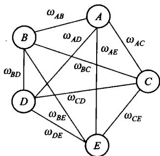
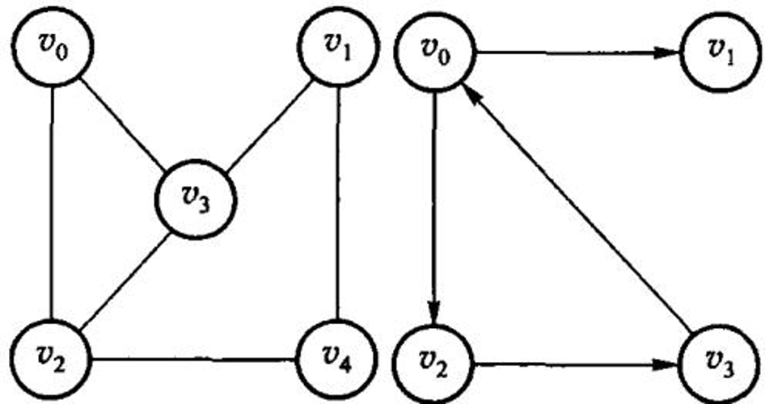
图 7.2 无向图 G1 与有向图 G2，完整保留原书的 (a)、(b) 子图。
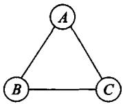
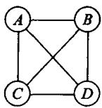
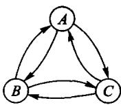
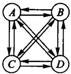
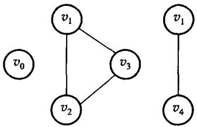
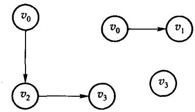
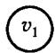
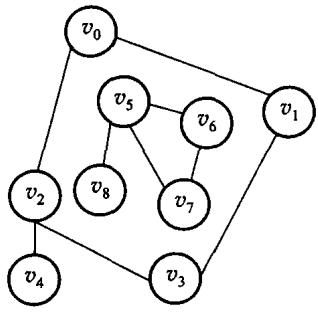
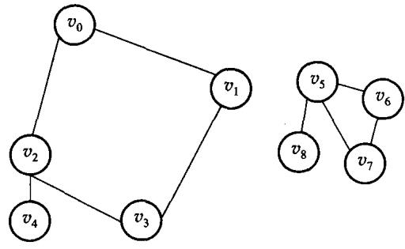
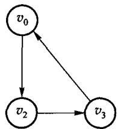
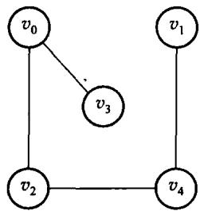
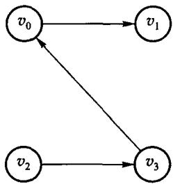
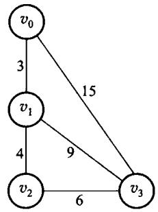
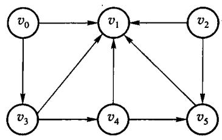
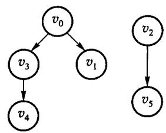
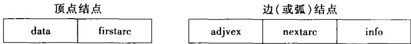
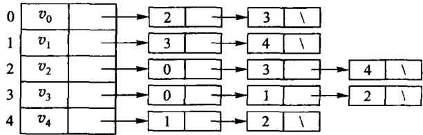
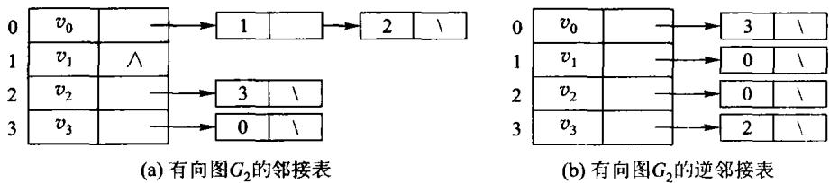
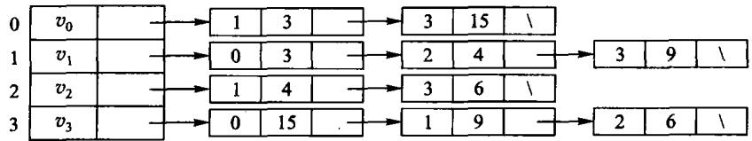
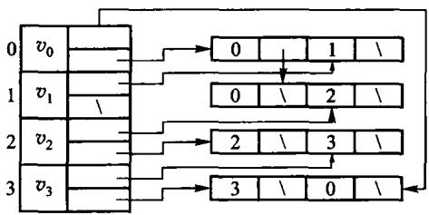
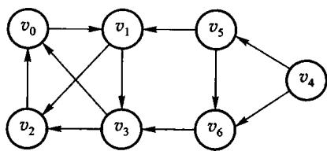
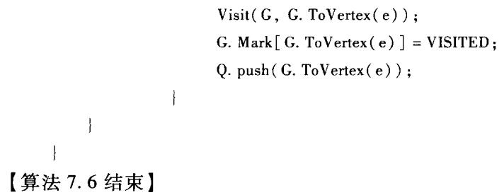
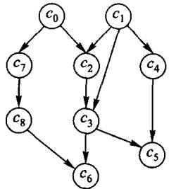
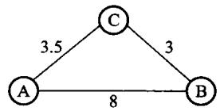
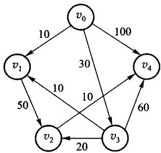
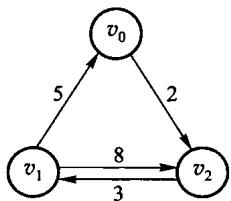
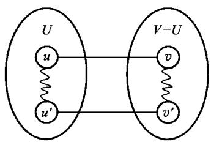
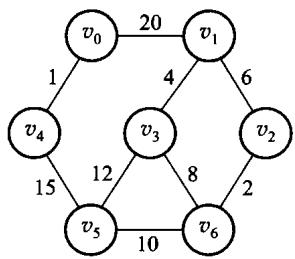
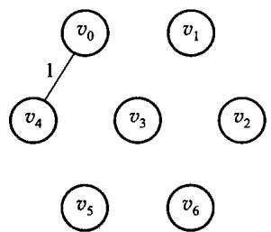
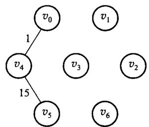
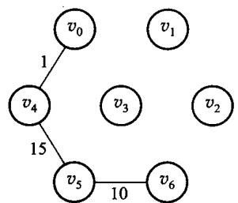
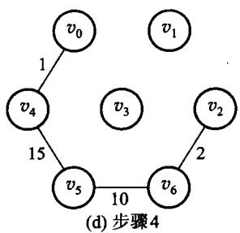
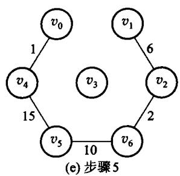
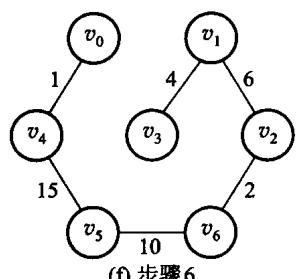
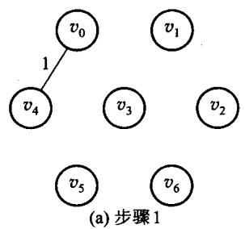
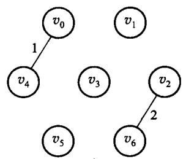
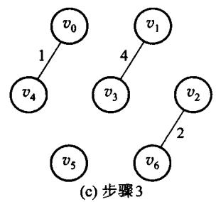
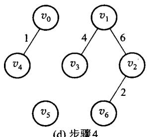
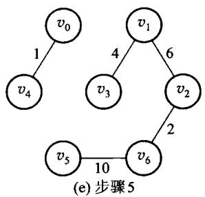
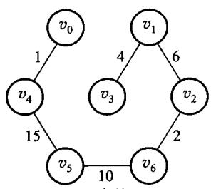
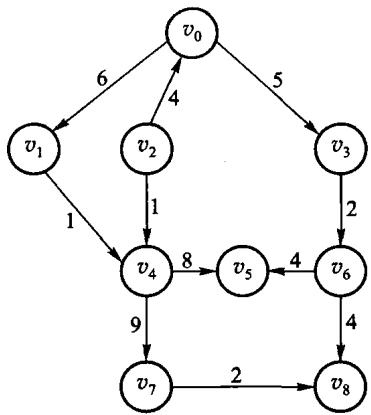
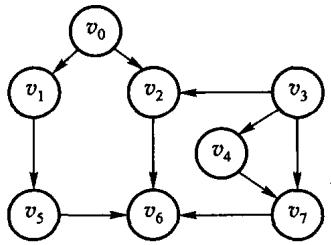
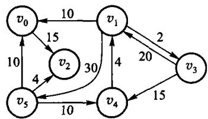
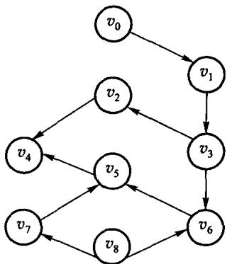
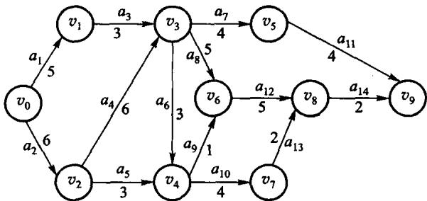
#本章小结
图对前驱和后继的个数都不加限制。边可以无向或有向、可以带权。存储常用邻接矩阵（稠密、问边 O(1)）和邻接表（稀疏、沿出边走）。周游有深度优先和广度优先。有向无环图可以拓扑排序；有环则无解。非负权单源最短路用 Dijkstra，任意两点用 Floyd。无向连通图的最小生成树可用 Prim 或 Kruskal，二者总权相同。
本章实现使用邻接矩阵，因此当前 Dijkstra 和 Prim 的直接实现是 O(V2)，Floyd 是 O(V3)，空间是 O(V2)。改用邻接表并配合二叉堆之后，稀疏图上的 Dijkstra 达到 O((V+E) log V)—— 这一条现在有实现和实测支撑，见 7.3.2 与 code/ch07/adjacency_list。两个结论各自对应 各自的存储结构，不能互相套用。
#习题
#补充算法设计题（参考课程第 7 章）
- 在 DAG 中设计关键路径算法，计算每个顶点的最早发生时间和工程总工期。
- 说明为什么不能给所有边统一加常数后继续使用 Dijkstra；给出负权边反例。
- 证明 Dijkstra 得到的是最短路树而不一定是最小生成树。
- 分别画出 4 个顶点的无向完全图和有向完全图，并写出边数公式。
- 对本章 demo 那张有向图，写出从 0 出发的一种 DFS 序列和一种 BFS 序列。
- 给一个有环的有向图，说明拓扑排序如何发现环。
- 在边权非负的图上用手算 Dijkstra，列出每一步选出的顶点和距离数组。
- 说明为什么负权边不能直接用 Dijkstra。
- 对同一张无向带权连通图分别做 Prim 和 Kruskal，验证边集可以不同、总权必须相同。
- 邻接矩阵和邻接表各适合什么图、什么运算？给出空间代价。
#上机题
- 读入一个有向图，输出一种拓扑序；有环则报告。
- 实现 Dijkstra，输出源点到各点的距离和一条最短路径。
- 实现 Prim 与 Kruskal，对同一组随机连通图比较总权。
code/ch07/adjacency_list已经用邻接表重做了 DFS/BFS 并与矩阵版对拍。再往前一步：给它加一个删边接口，并说明为什么删边在邻接表上是 O(deg u)、在矩阵上是 O(1)。